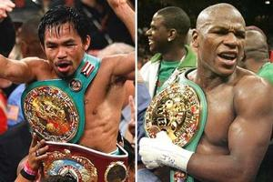
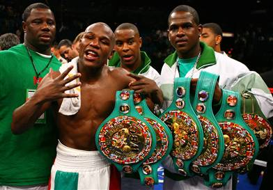

Money Talks: The Manny Pacquiao – Floyd Mayweather JR Superfight Complications |
|
| Over the past few months professional boxing has delivered some good match- ups. The first half of this year has not been that bad! Even though the biggest fight of the decade fell apart, the sport continued to stride. With the access of HBO Sports, Showtime and ESPN2, boxing is alive and well. There have been some exciting fights on all of these networks.We enjoy HBO Boxing, HBO Boxing After Dark, Showtime’s Super Six and ESPN2 Friday Night Fights. Some of these events were with the best fighters boxing has to offer, such as; Paul Williams, Sergio Martinez, Andre Berto, Miguel Cotto, Manny Pacquiao, Amir Khan, Victor Ortiz, Joshua Clottey, Vitali Klitschko, David Haye, Shane Mosley and Floyd Mayweather JR.These fighters and there were some I didn’t mention here, have already fought in this first half of 2010. The sport is off to a good start. It seemed that most of the match ups went pretty well, even the negotiations. |  |
| Why is Floyd Mayweather JR. and Manny Pacquiao fight so complicated? First of all, these two fighters are special, but human. Sometimes the bigger the demand, the more complicated it gets. The public has made these two special fighters immortals. To add to that, they know how important they are to boxing fans. Right now these two fighters are sitting at the very top of the world in boxing with their promoters strapped to their ankles.Even though we have enjoyed some good fights this year, it seems the one everybody wants to see is Floyd “Money” Mayweather JR. vs. Manny “Pacman” Pacquiao. It seems the boxing public do not care what other good match ups are out there and I’m sure there are some. Right now it seems nothing can fill this void, except that fight. Fight fans are like junkies needing a fix when it comes to these guys. These two fighters know the magnitude of this fight and what it’s worth in dollars, which has somewhat made them gods. |
 |
© 2011 Copyright. All right reserved. Site Design by: Olanrewaju Eniola